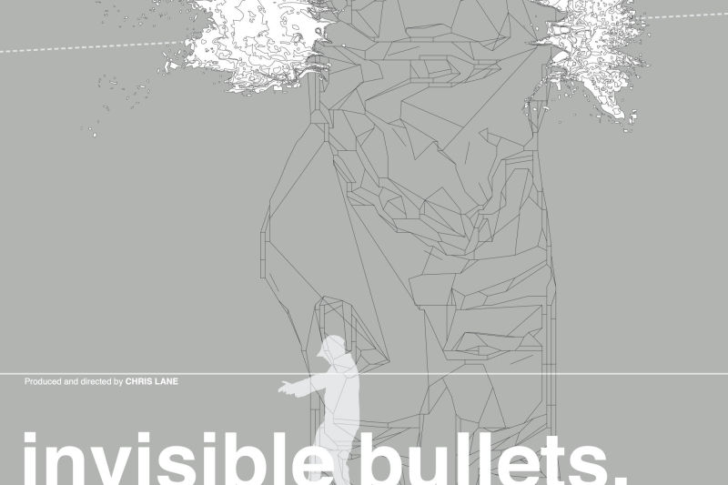
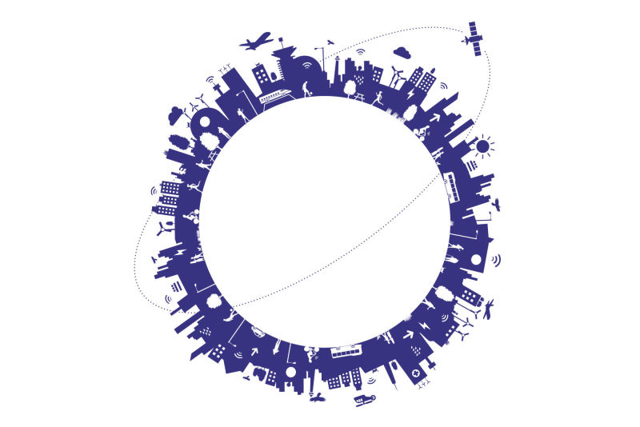
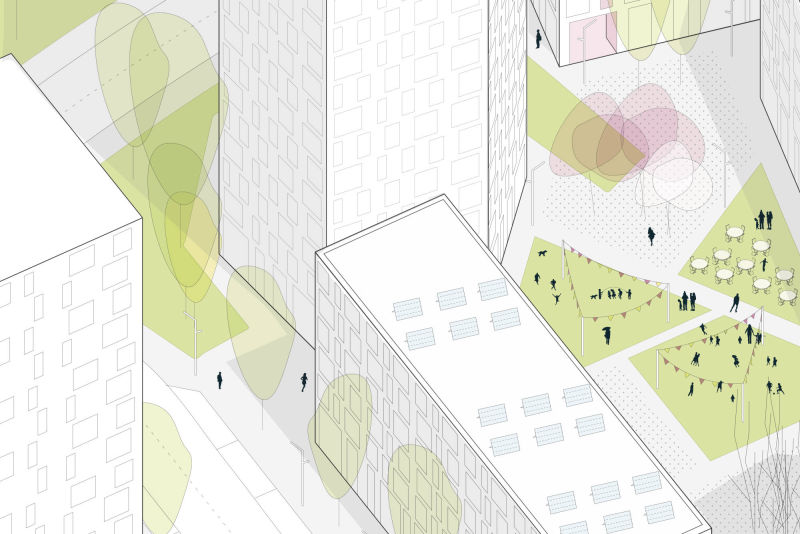

Short movie poster
Chris Lane Productions (2006)
Chris Lane Productions (2006)
Health magazines set creation
Expression Groupe (2014)
Expression Groupe (2014)
 New visual identity
New visual identityRelaxnews (2011)
Rio 2016 masterplan visual
Arup Urban Design (2015)
Arup Urban Design (2015)
Sustainable futures visual
Arup International Development (2019)
Arup International Development (2019)
Mid Lea masterplan visual
Arup Urban Design (2017)
Arup Urban Design (2017)
 Musée de Pont du Gard permanent exhibition
Musée de Pont du Gard permanent exhibitionMusée du Pont du Gard (2001)
Outdoor campaign
South African Airways (2006)
South African Airways (2006)